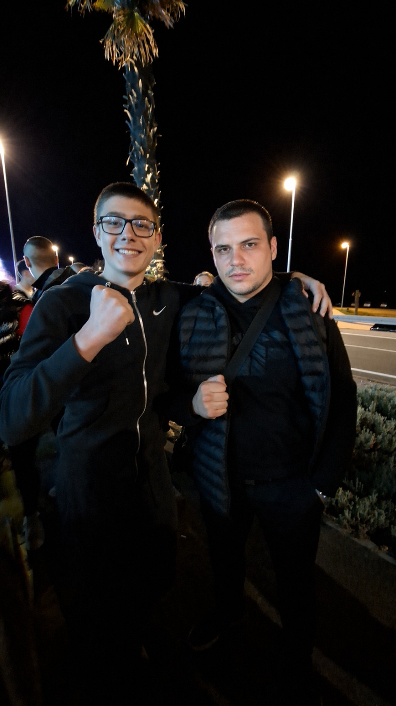

On je najbolji igrač nogometa na otoku Krku.
Nitko mu ne može ništa — ni Amar, ni Mateo, ni Bruno, ni Karlo.
Oni se trude, a on se samo pojavi i osramoti ih. ⚽🔥
* Ova izjava je službeno potvrđena od strane svih koji znaju nešto o nogometu.
Svi protivnici su ljubazno zamoljeni da prihvate poraz mirno.